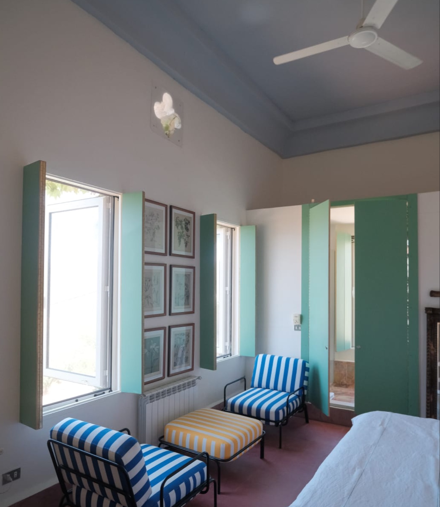
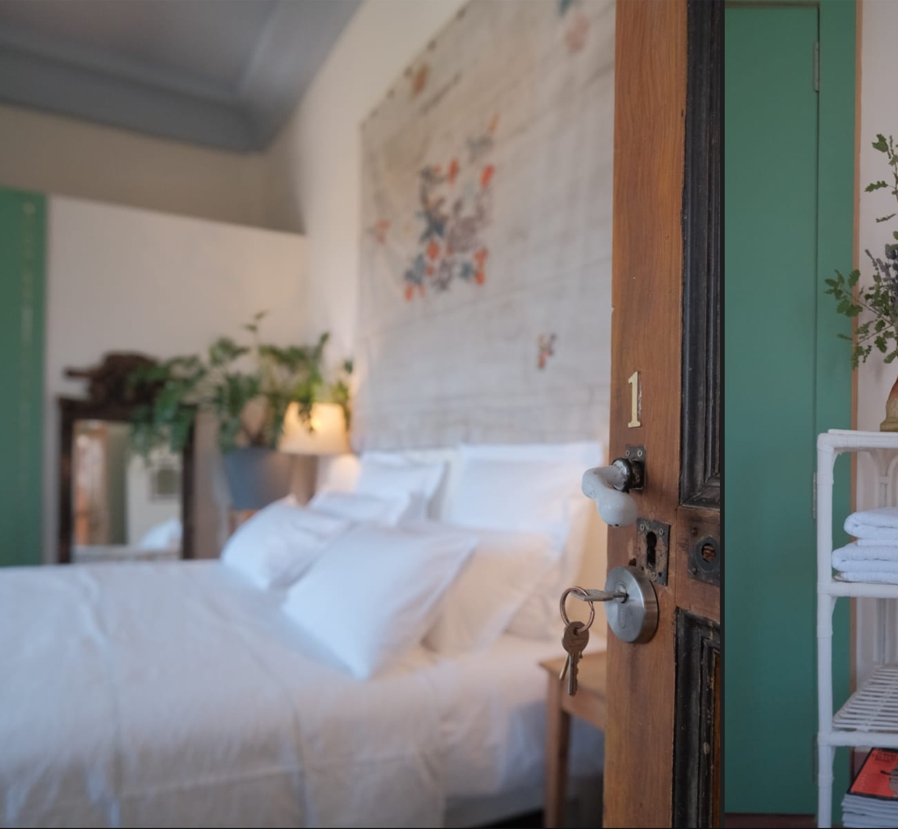
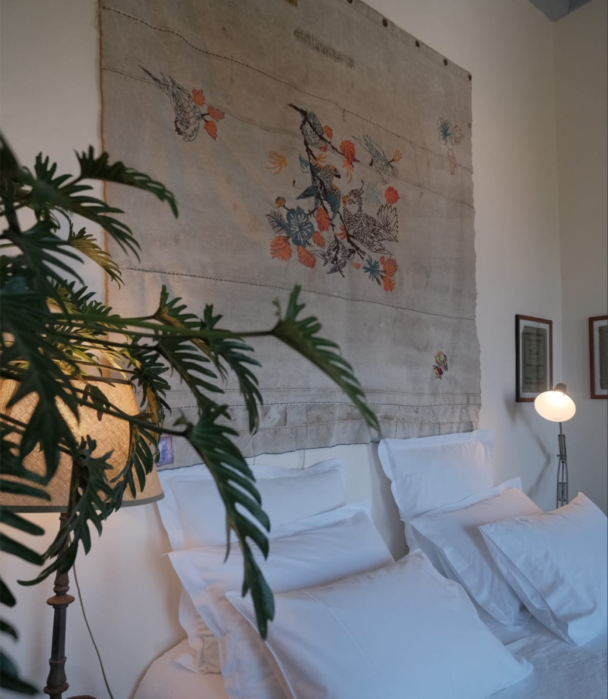
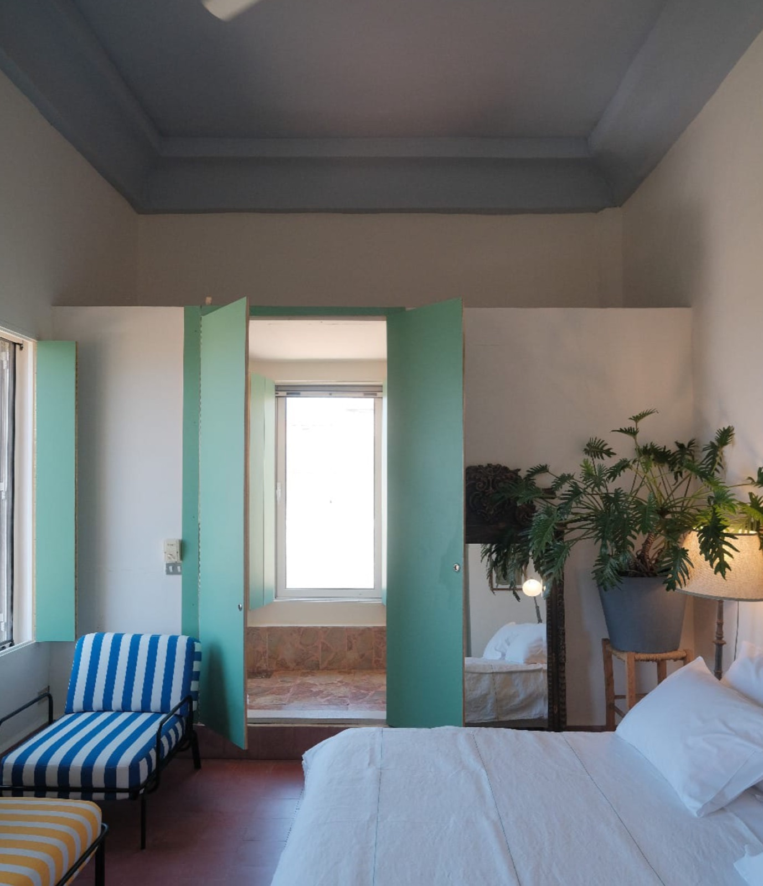

Room 01
Book Room 1
Striped chairs & a hand-stitched sky
A double room under a soaring blue-grey ceiling, where an embroidered linen tapestry hangs over the king bed and deck-striped chairs catch the morning sun through two shuttered windows.
- Double · 2 guests
- King bed
- Private bathroom
Low season$160 / night
High season$200 / night